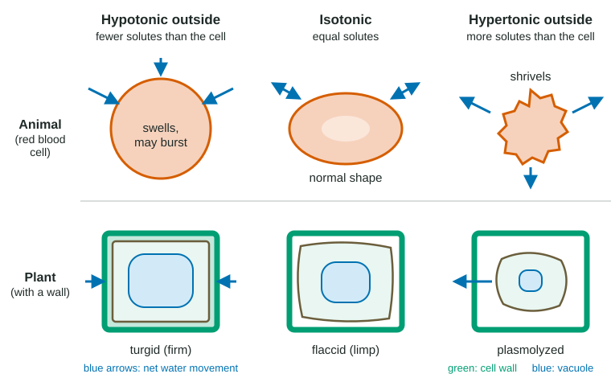

Water crosses cell membranes all the time, through the bilayer and much faster through aquaporins. Which way it goes decides whether a cell swells, shrinks or stays the same size, whether a plant stands up or wilts, and whether a freshwater fish drowns from the inside. This page builds the rule for predicting it, first with solute concentrations and then with water potential.
Osmosis: water moves toward more solute
Picture two sugar solutions separated by a membrane that lets water through but not sugar. The left side has a little sugar; the right side has a lot. Sugar cannot cross, so it cannot even out. Water can. Around each dissolved sugar molecule, water molecules cluster and are less free to move. So the side with more sugar has fewer free water molecules, and more water crosses from left to right than from right to left.
That net movement of water across a selectively permeable membrane is osmosis. The short rule: water moves toward the side with more solute. It is diffusion of water, so it costs the cell no ATP.
The total concentration of dissolved particles is the osmolarity. Particles are what count, not molecules: one unit of table salt (NaCl) splits into a Na⁺ ion and a Cl⁻ ion, so 0.1 mol/L salt gives about 0.2 mol/L of particles, twice as many as 0.1 mol/L sugar.
Tonicity words are comparisons
Tonicity describes what a solution would do to a cell's volume. It is always a comparison between the solution and the cell:
- Hypotonic solution: fewer non-crossing solutes than the cell. Water moves into the cell.
- Hypertonic solution: more non-crossing solutes than the cell. Water moves out of the cell.
- Isotonic solution: the same. Water moves in and out at equal rates, so there is no net change.
"Hypo" means under and "hyper" means over, both about solute. A memory trick: the cell in a hypotonic solution swells like an O. Note the phrase "non-crossing": a solute that passes through the membrane spreads to both sides and stops mattering. Only trapped solutes set tonicity.
Animal cells and plant cells react differently

An animal cell, like a red blood cell, has only its membrane around it (Figure 1, top row). In a hypotonic solution water keeps entering and nothing pushes back, so the cell swells and may burst. Bursting is called lysis (or cytolysis). In a hypertonic solution it loses water and shrivels into a spiky shape, called crenation. In an isotonic solution it keeps its normal shape, which is why fluids given through a drip into a vein are isotonic to blood.
A plant cell has a cell wall outside its membrane (bottom row). In a hypotonic solution water enters, the large central vacuole fills, and the cell's contents press against the wall. The wall presses back. That outward pressure is turgor pressure, and a cell full of it is turgid, or firm. This is the normal, healthy state for most plant cells, and it is what holds up soft stems and leaves. In an isotonic solution the cell is flaccid, or limp, and the plant wilts. In a hypertonic solution the cell loses water, and the membrane and its contents pull away from the wall: plasmolysis.
| Solution outside, compared with the cell | Net water movement | Animal cell | Plant cell |
|---|---|---|---|
| Hypotonic | Into the cell | Swells, may burst (lysis) | Turgid (firm); healthy |
| Isotonic | None (equal in and out) | Normal | Flaccid (limp) |
| Hypertonic | Out of the cell | Shrivels (crenation) | Plasmolyzed |
Water potential: one number that predicts the direction
Solute concentration works well for an animal cell, but it misses something in a plant cell: pressure. A turgid plant cell can hold more solute than the water around it and still take in no more water, because the wall is squeezing back. To include pressure, biologists use water potential, written Ψ (the Greek letter psi). Water moves from higher to lower water potential.
Water potential has two parts:
- Solute potential (Ψs): zero for pure water, and more negative the more solute is dissolved.
- Pressure potential (Ψp): zero in an open container, positive when the water is being pushed on (inside a turgid cell), negative when it is being pulled (as in xylem during transpiration).
Ψ = Ψs + Ψp
Water potentials are often given in bars (1 bar is about the air pressure at sea level). By definition, pure water in an open beaker has Ψ = 0, so any solution in an open beaker has a negative water potential.
Worked example: which way does water move? A plant cell has Ψs = −8 bars and Ψp = +3 bars. It sits in an open beaker of sucrose solution with Ψs = −6 bars.
- Cell: Ψ = −8 + 3 = −5 bars.
- Solution: open beaker, so Ψp = 0 and Ψ = −6 + 0 = −6 bars.
- Water moves from higher to lower: from the cell (−5) into the solution (−6). The cell loses water, its turgor drops, and it becomes less firm.
Notice that the cell has more solute than the solution (−8 against −6) and still loses water. The pressure inside the wall made the difference.
When a plant cell sits in pure water, water enters until the pressure inside raises the cell's Ψ all the way to 0, matching the water. Then net movement stops. That is why a plant cell in a hypotonic solution becomes turgid instead of bursting. Turning solute concentrations into solute potentials is a skill of its own, covered right after this topic.
Reading a percent-mass-change experiment
A classic lab soaks cores of potato in a series of sucrose solutions and weighs them before and after. Cores in weak solutions gain water (positive change); cores in strong solutions lose water (negative change).
Worked example. Potato cores gain 7.6% of their mass in 0.2 mol/L sucrose and lose 2.4% in 0.4 mol/L. The line crosses 0% between them. The change drops by 10 points across 0.2 mol/L, and reaching zero takes 7.6 of those 10 points, so the crossing is at about 0.2 + 0.76 × 0.2 ≈ 0.35 mol/L.
Meaning: a 0.35 mol/L sucrose solution has about the same water potential as the potato cells. A tissue that crosses zero at a higher concentration has more solute inside its cells and a lower water potential.
Why percent? Cores never weigh exactly the same, and a bigger core gains or loses more grams. Dividing by the starting mass lets you compare them fairly.
Osmoregulation: keeping water in balance
Most organisms live in surroundings whose solute level differs from their cells, so water keeps trying to enter or leave. Osmoregulation is how they keep water and solute balance anyway, one part of keeping a stable internal environment (homeostasis).
- Contractile vacuoles. Single-celled organisms in fresh water, such as Paramecium, live in a strongly hypotonic world and have no wall. A contractile vacuole collects the water that enters and squeezes it out of the cell, using energy. The saltier the water around them, the less often it needs to empty.
- Kidneys. In vertebrates, the kidneys adjust how much water and which solutes leave in urine. A freshwater fish, saltier than the water around it, gains water and loses salts; it makes large amounts of dilute urine and its gill cells take salts back in, spending ATP. A saltwater fish has the opposite problem: it loses water to the sea, so it drinks seawater, gets rid of the extra salt through its gills, and makes only a little urine.
- Controlling solute levels. Cells can change their own solute concentrations. Plant cells in salty or dry soil build up solutes, lowering their water potential so water still flows in. Many sea animals keep their body fluids close to isotonic with seawater.
Common mistakes
- "The solute moves in osmosis." Water moves; the membrane holds the solute back.
- "Water moves toward higher water potential." The reverse: from higher (less negative) to lower (more negative).
- "Hypertonic means a lot of water." It means a lot of solute, so relatively less free water.
- "Plant cells in isotonic solution are healthiest." Plant cells do best turgid, in slightly hypotonic surroundings; isotonic leaves them limp.